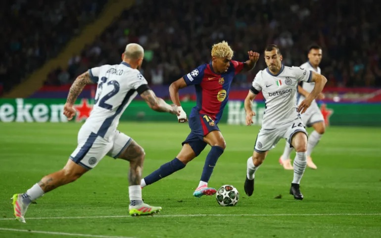
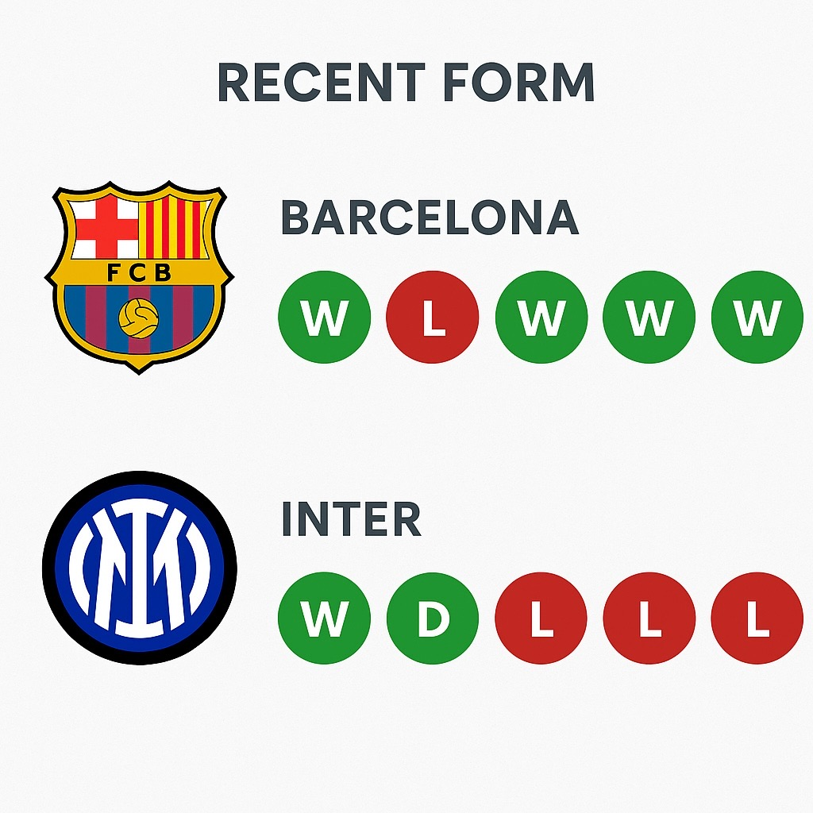
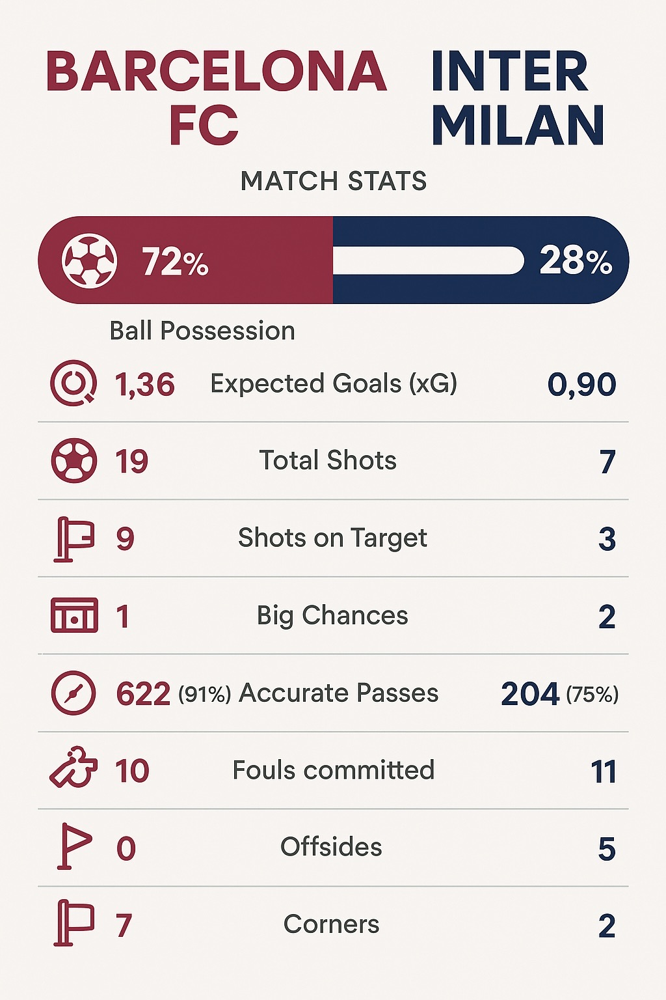

Barcelona faced Inter Milan at home during the first leg of the Champions League semi final on Wednesday, April 30 at 3:00 pm local time. On the biggest stage in club football, two immense, iconic clubs clashed in a titanic battle.
Albert Gea/Reuters
The stage was more than set for this game, with the two clubs currently in contention for the top spot in their respective leagues. Inter are second in Serie A, in Italy, just three points off the top spot held by Napoli. Barcelona are currently holding the top spot in La Liga, the Spanish top-flight, after being demoted to third place earlier in the season.
Made with Canva
Both teams had a relatively easy path to this year’s semi finals. With the new format in place for this season, many more teams were entered into the Champions League this year, leading to a higher chance for decreased competition. Barcelona finished second in the group stage, while Inter finished third. They then had a relatively easy round-of-16 and quarter finals draw, though Inter did have to face the current leaders in the German league, Bayern Munchen, in the quarterfinals. They have not been the strongest team in Europe this year, though, but still gave Inter a difficult battle to the semifinals, with two incredibly close games. Barcelona were more comfortable in their quarter final against the second place German team Dortmund.
This round of the Champions League was expected to be extremely contentious from the start, and it proved it, with the French striker, Marcus Thuram, opening the scoring in record time for a Champions League semifinal in just 30 seconds with a wonderful finish. He has been in good form so far this season. Denzel Dumfries extended Inter’s lead in the 21st minute to 2-0. However, just three minutes later, Lamine Yamal, Barcelona’s sensational right winger, finessed his way past two defenders to then curl a shot in off the left post to cut the Inter’s lead to one. The 17-year-old has been on fire this season, with widespread attention on him, and comparisons to some of our era’s greats, Messi and Neymar, both former Barcelona players, and widely considered some of the best players to have graced the sport. Ferran Torres, Barcelona’s super-sub this season, brought the teams to a stalemate by the 38th minute, assisted by Raphinha.
Inter responded in the second half with a goal in the 64th minute from Dumfries again to secure his brace, but not a minute later, Raphinha responded with a thunderous shot from well outside the box, that came off the crossbar and then off the goalkeeper Sommer’s back in what would be counted as an own goal.
Made with Canva
Nothing separated the two sides in the first leg, and it is off to the San Siro for the second the following week, where Inter will hold the home advantage. An even more highly anticipated game than the first, we are sure to see another fiery display from the two sides and their star-studded rosters.